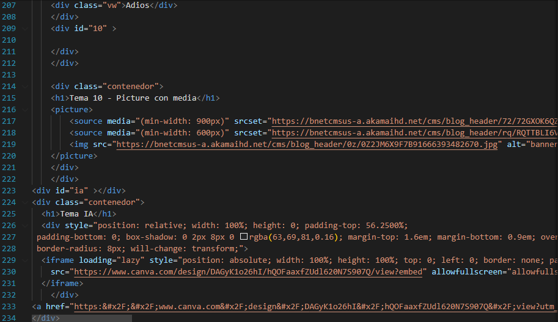
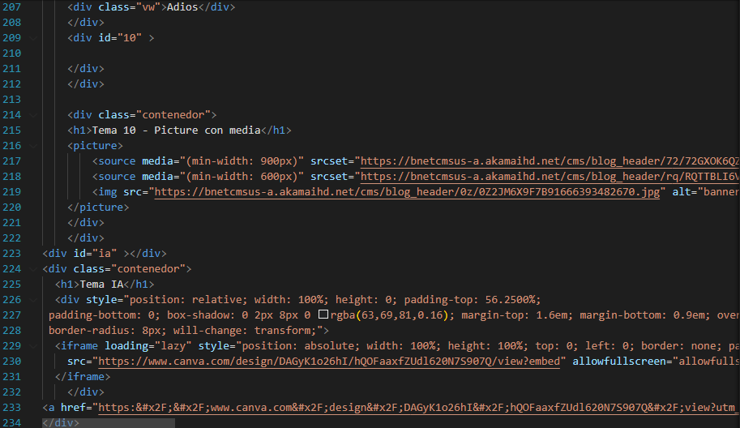

Tema 10 - Picture con media

En esta clase, utilizamos wireframes para planificar la estructura visual de una página antes de escribir el código HTML. Esto ayuda a organizar los elementos y mejorar la experiencia del usuario (UI - User Interface).
El header, o cabecera, es una de las partes más importantes de una página web. Es el primer elemento que los usuarios ven al ingresar a un sitio, por lo que debe ser ordenado, claro y atractivo para causar una buena primera impresión.
El footer o pie de página es una sección frecuentemente subestimada en el diseño web, pero si se estructura y diseña correctamente, puede aportar valor, funcionalidad y confianza al sitio.
La tipografía se ajusta con propiedades como el tipo, tamaño y estilo de la fuente. El color modifica tanto el texto como los fondos. Los filtros aplican efectos visuales, como desenfoque o brillo. La propiedad position controla cómo se posicionan los elementos, ya sea de manera estática, relativa, absoluta o fija. Finalmente, display define el comportamiento de los elementos en el flujo de la página, como bloque, en línea o en cuadrícula.
Las rutas en HTML se utilizan para enlazar diferentes recursos o páginas dentro de un sitio web. Estas rutas pueden ser absolutas o relativas: Rutas Absolutas: Indican la ubicación completa del recurso, incluyendo el dominio. Ejemplo: Ir a la página Rutas Relativas: Especifican la ubicación del recurso en relación a la página actual. Ejemplo: Ir a la página Las rutas también se usan para enlazar a archivos locales (como imágenes o documentos) o a páginas internas dentro de un sitio web.
La especificidad es el mecanismo mediante el cual los navegadores determinan qué valores de propiedad CSS son más relevantes para un elemento y, por lo tanto, cuáles se aplicarán.
Las imágenes ayudan a los buscadores a indexear las paginas, brindan a los usuarios buenas experiencias de usuario ux y sirven de explicación grafica.
La web funciona mediante links, que nos llevan a otras paginas, sitios web, imágenes etc, un link puede ser un texto, una imagen, un video etc.
En HTML, las listas son elementos que se utilizan para organizar y agrupar contenido relacionado en forma de elementos enumerados o con viñetas. Son muy útiles para mostrar datos de forma clara y ordenada.
Los formularios permiten a los usuarios enviar datos a un servidor, la etiqueta form define un formulario y puede contener elementos como input, textarea y button.
Es un conjunto estructurado de datos distribuidos en fiñas y columnas una tabla permite buscar con rapidez y facilidad valores entre diferentes tipos de datos que indiquen algun tipo de conexion.
Una animación en CSS3 es una técnica que permite aplicar movimiento, cambios de estilo o efectos visuales a los elementos HTML de una página web, sin necesidad de JavaScript.
Ejemplo (plano de la casa en Los Sims): Cuando entras al modo “Construir” en Los Sims, puedes ver todo lo que tiene tu casa: paredes, muebles, ventanas, sims, plantas. Ese inventario y la forma en que todo está colocado es como el DOM: un mapa de todos los objetos y cómo están organizados. Si quieres cambiar algo (mover un sofá o poner una ventana), usas ese plano.
Ejemplo (hacer que un Sim baile): Cuando seleccionas a un Sim y le das la orden “Bailar”, el personaje empieza a moverse. El DOM sería como la lista de instrucciones que recibe ese Sim para animarse: Levantar brazos Mover pies Girar Todo esto ocurre en orden y crea la animación.
Ejemplo (dar clic a un objeto): En Los Sims, cuando das clic sobre la cama y eliges “Dormir”, el Sim camina hasta la cama y se acuesta. El evento sería el clic sobre la cama, y el DOM es quien recibe esa señal y ejecuta la acción correspondiente.
Ejemplo (cambiar la ropa de un Sim): Ejemplo (cambiar la ropa de un Sim): Cuando entras a “Crear un Sim” y le cambias la ropa, color de pelo o accesorios, el Sim sigue siendo el mismo personaje, pero su aspecto cambia. El CSS es como el vestuario y el DOM es el Sim que se viste con esos cambios.
El viewport es básicamente la parte visible de una página web en la pantalla de un dispositivo. Es como la “ventana” por donde el
usuario ve el contenido. Su tamaño cambia dependiendo del dispositivo: en una computadora suele ser más ancho, mientras que en un
celular es más pequeño.
En desarrollo web, controlar el viewport sirve para que la página se adapte bien a distintos tamaños de pantalla y resoluciones.
Por eso, muchas veces se usa la metaetiqueta < meta name="viewport"> para definir cómo se mostrará el contenido, por ejemplo,
ajustando el zoom o el ancho de la página para que se vea correctamente en cualquier dispositivo.
En mi opinión, me pareció de mal gusto que las presentaciones usaran imágenes generadas por inteligencia artificial, aunque la plática no fuera en contra sino en el uso responsable de la inteligencia artificial, hubo una opinión controversial sobre todo por una conferencista la cual mencionó que antes cuando una persona quería un dibujo, tenía que hablar con un dibujante, ahora que existe la IA, ellos mismos pueden hacerla, y esto fue controversial porque dió a entender que para qué sirve que nosotros estudiemos una carrera de diseño, si ellos podrán hacerlo, lo que yo pienso es que la IA no tiene creatividad, no tiene ese toque humano, no tiene experiencias vividas para crear buenos diseños.
Yo hubiera hecho que las pláticas tuvieran imágenes reales como representaciones, por ejemplo en una imagen que estaban presentando un inodoro en una galería de arte, utilizaron IA, en lugar de mostrar las fotos reales de la galería, además yo hubiera medido mis palabras al momento de hablar del arte, ya que si es un tema controversial, y que los presentadores se lo hayan tomado muy a la ligera diciendo que la IA es 100% inocente ante todo esto porque como no tiene experiencias vividas no puede crear las cosas con creatividad, me parece una justificación muy básica, yo hubiera explicado mejor que la IA selecciona lo que está en internet y con base a eso crea una respuesta, con base al conocimiento que le damos los seres humanos por nuestra huella digital.
En HTML y CSS, las unidades de medida se usan para definir tamaños de texto, márgenes, contenedores y otros elementos. Se dividen en dos tipos principales:
cm → centímetrosmm → milímetrosin → pulgadaspt → puntospx → píxeles% → porcentaje, relativo al contenedorem → relativo al tamaño de la fuente del elemento padrerem → relativo a la fuente raízvw → relativo al ancho visible de la pantallavh → relativo a la altura visible de la pantalla
La regla @media en CSS permite aplicar estilos de manera
condicional según las características del dispositivo o la ventana del navegador,
por ejemplo el ancho, alto o la orientación de la pantalla.
Esto facilita crear diseños responsivos que se adaptan a diferentes tamaños de
pantalla, como computadoras, tablets o móviles.
La regla @property en CSS se utiliza para definir propiedades
personalizadas que pueden tener un tipo de dato, un valor inicial y reglas de
herencia. Con esto se pueden crear custom properties más avanzadas y
animables, ya que el navegador reconoce cómo interpretar sus valores.
Es muy útil para trabajar con animaciones o estilos dinámicos.
Permite animar cambios de color de un elemento.
Retrasa el inicio de la animación.
Controla la velocidad del cambio (ejemplo: ease-in-out, linear, ease).
Indica la dirección de la animación (normal, reverse, alternate).
Define el estilo del elemento antes y después de la animación.

 

Un reset CSS elimina los estilos por defecto de los navegadores (márgenes, paddings, tamaños de texto, etc.), logrando que todos los elementos comiencen desde una misma base.
* {
margin: 0;
padding: 0;
box-sizing: border-box;
}
No se apliqué el reset en esta bitácora, pero es importante conocerlo porque asegura consistencia visual entre navegadores.
En HTML es posible asignar más de una clase a un mismo elemento escribiendo los nombres separados por un espacio dentro del atributo class. Por ejemplo:
class= "contenedor recuadro"
Aquí el elemento tiene dos clases: contenedor y recuadro. Esto significa que puede heredar los estilos de ambas al mismo tiempo. Esta práctica resulta útil porque permite reutilizar código CSS, combinando diferentes estilos sin necesidad de crear una clase nueva para cada caso.
Por ejemplo, si la clase .contenedor define que el elemento esté centrado en la página y la clase .recuadro agrega un borde y un espaciado interno, al usarlas juntas el elemento tendrá las dos características: será un contenedor centrado y además un recuadro con borde.
En conclusión, asignar múltiples clases a un mismo elemento es una forma de organizar y optimizar los estilos en un proyecto web, ya que favorece la flexibilidad y la composición visual de los elementos.
En este tema apliqué el enfoque mobile first, es decir, diseñar primero para pantallas pequeñas (celular) y luego usar media queries para adaptar el diseño a tablets y computadoras.
De esta forma, la página comienza siendo ligera y funcional en móviles, y después se amplía con más espacio y mejores proporciones en pantallas grandes.
/* Base = Celular */
body { font-size: 0.9rem; }
/* Tablet */
@media (min-width: 768px) {
body { font-size: 1rem; }
}
/* PC */
@media (min-width: 1024px) {
body { font-size: 1.1rem; }
}
Con este enfoque aseguré que la bitácora sea responsiva, adaptándose de manera ordenada según el dispositivo.

El código JavaScript mostrado realiza varias operaciones básicas para practicar el uso de variables, estructuras de control y ciclos. Primero, se utiliza console.log() para enviar mensajes a la consola y document.write() para agregar contenido directamente a la página web. Luego se declaran variables con let, var y const para demostrar sus diferentes formas de uso. Posteriormente, se aplican estructuras de control como if y switch para evaluar condiciones, mostrando diferentes resultados según el valor de las variables. Finalmente, se implementan tres tipos de bucles: for, while y do-while, que repiten acciones de manera controlada. En conjunto, este script sirve como una introducción práctica a los fundamentos de la programación en JavaScript dentro de un entorno HTML.
El archivo normalize.css es una hoja de estilos que se utiliza para hacer que los elementos HTML se vean y se comporten de forma más consistente en todos los navegadores. A diferencia del “reset.css”, que elimina por completo los estilos por defecto del navegador, normalize.css los ajusta y corrige solo cuando es necesario, manteniendo aquellos valores útiles que mejoran la accesibilidad y la legibilidad. De esta manera, proporciona una base más estable y uniforme para comenzar a diseñar un sitio web, evitando diferencias visuales entre navegadores como Chrome, Firefox o Edge y facilitando el trabajo del desarrollador en la etapa inicial del diseño.


Morado: simboliza magia, misterio y resolución de problemas. Naranja: transmite atención y comodidad.
Magics, Cuevana y Dramabox.
Libre Baskerville para títulos — elegida para aportar elegancia y autoridad visual, creando contraste con las otras tipografías (Lora y Merriweather). Es legible en pantallas y apropiada para un enfoque cinematográfico, lo cual encaja con la temática de novelas del sitio.
Nuestra plataforma ofrece series exclusivas con tramas de mayor calidad (hasta 10 veces mejores, según la propuesta), y evita las ventanas emergentes y anuncios sugestivos comunes en otras páginas.
function saludar() {
console.log("¡Hola, bienvenido a JavaScript!");
}
saludar(); // Llamada a la función
Imprime la función saludar
function sumar(a, b) {
return a + b; // Retorna el resultado de la suma
}
let resultado = sumar(5, 3);
console.log("El resultado es: " + resultado);
Retorna el valor de la suma de a + b
function mostrarMensaje(nombre) {
console.log("Hola " + nombre + ", ¡bienvenido!");
}
// Llamamos a la función pasando un argumento
mostrarMensaje("Rafael");
llama a una función ya compuesta de un mensaje y solo se envía el nombre
function multiplicar(x, y) {
return x * y;
}
console.log("El producto es: " + multiplicar(4, 6));
Imprime en la consola el resultado de la función al momento de llamarla
<p id="mensaje">Texto original</p>
<button onclick="cambiarTexto()">Cambiar texto</button>
<script>
function cambiarTexto() {
document.getElementById("mensaje").textContent = "¡El texto ha cambiado!";
}
</script>
Llama al elemento para editarlo por medio de su id o nombre
<button id="boton">Haz clic aquí</button>
<script>
document.getElementById("boton").addEventListener("click", function() {
alert("¡Has hecho clic en el botón!");
});
</script>
Crea una alerta, es un evento de JavaScript
Tiene 6 capas y se mueven a distintas velocidades
La propiedad order define el orden en que los elementos flexibles aparecen dentro del contenedor,
independientemente del orden en el código HTML.
Por defecto, todos los elementos tienen un valor de order: 0;.
Los elementos con valores menores aparecen antes y los mayores después.
div { order: 2; }
La propiedad flex-grow determina cuánto puede crecer un elemento flexible
en relación con los demás dentro del mismo contenedor.
Si un elemento tiene flex-grow: 2; y otro flex-grow: 1;,
el primero ocupará el doble de espacio adicional disponible.
div { flex-grow: 1; }
La propiedad flex-basis define el tamaño inicial del elemento flexible
antes de distribuir el espacio restante.
Puede definirse en unidades de longitud (px, %, etc.) o como auto
(que usa el tamaño del contenido o width del elemento).
div { flex-basis: 200px; }
La propiedad align-self permite alinear un elemento individualmente
a lo largo del eje transversal (vertical u horizontal dependiendo de la dirección del flex).
Sobrescribe la propiedad align-items del contenedor padre.
div { align-self: center; }En este sitio web utilizamos cookies para mejorar tu experiencia de navegación, analizar el tráfico y personalizar el contenido.
Las cookies son pequeños archivos de texto que se almacenan en tu dispositivo cuando visitas un sitio web. Sirven para recordar tus preferencias, iniciar sesión automáticamente o recopilar estadísticas.
Puedes aceptar o rechazar las cookies desde este banner o configurar tu navegador para bloquearlas. Si las desactivas, algunas funciones del sitio podrían no funcionar correctamente.
Bootstrap es un framework de diseño web que permite crear sitios responsivos y visualmente atractivos de manera rápida, utilizando una combinación de HTML, CSS y JavaScript predefinidos. Su principal ventaja es que facilita el uso de componentes ya diseñados —como menús, botones, formularios o carruseles— que se adaptan automáticamente a diferentes tamaños de pantalla. En mi bitácora integré un navbar (barra de navegación) usando la estructura de Bootstrap para organizar los enlaces del sitio de forma ordenada y con estilo profesional, y también añadí un carrusel de imágenes, que permite mostrar contenido visual de manera dinámica y elegante. Ambos elementos contribuyen a mejorar la interactividad y presentación general de la página.